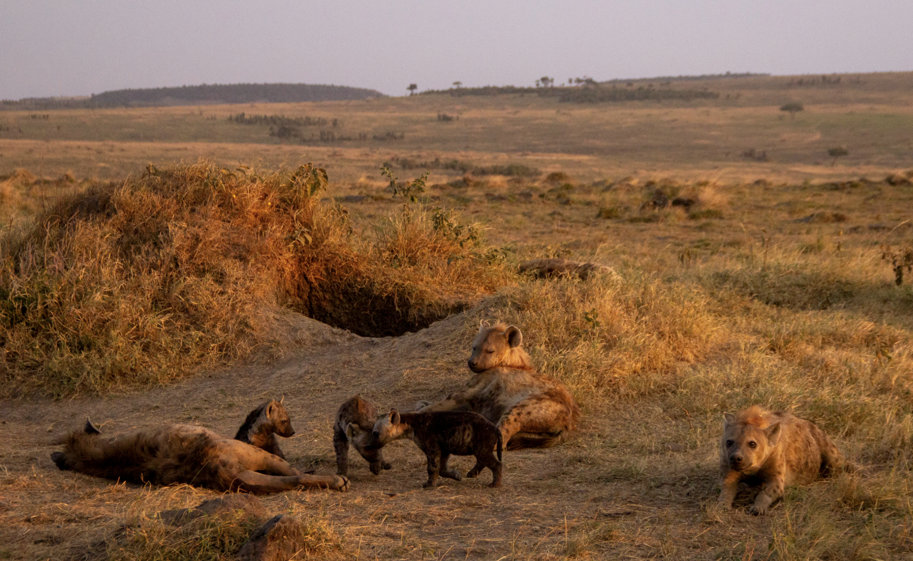
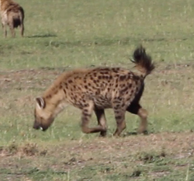
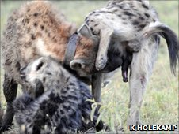
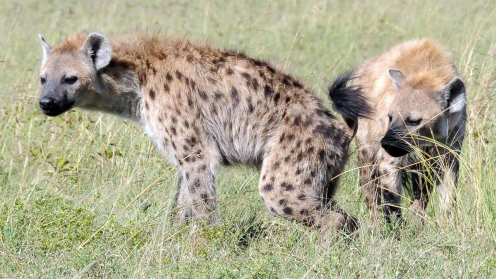

An introduction to the social lives of spotted hyenas, drawn from nearly four decades of research in the Maasai Mara.
Society
Social Structure
Spotted hyenas live in female-dominated clans of up to 130 individuals.1
Clans are fission–fusion societies: members share a territory and a communal den, but spend most of their time alone or in small, shifting subgroups.2
Large clans contain several unrelated matrilines (adult females with their cubs and grandcubs) plus adult immigrant males.3
Cubs inherit their mother's rank through social support, much as in many monkeys, ranking just below their mothers.4,5
Rank shapes access to food, reproductive success, and survival.6,7
Hyena society is nepotistic and built on political alliances: relatives back each other in fights to hold their places in the hierarchy.8–11
Immigrant males arrive with no relatives or allies, so they start at the very bottom and queue for status in order of arrival.12–14
Rank reversals are rare; the females that do rise have the strongest, most reliable allies.11
Most rank changes come instead from births and deaths, so nearly every hyena slides slowly down the hierarchy over its life.15

Communication
Vocalizations & Signals
Hyenas have a large and varied vocal repertoire.16
Whoops carry for kilometers and rally clan-mates to defend territory, food, or the den.16
Whoops are individually distinctive, and mothers recognize their own cubs' whoops.17,18
Giggles, groans, growls, lows, and rumbles are used in close-range social interactions.16
Paste from the anal glands marks territories and signals clan, sex, reproductive state, identity, and possibly rank; gland bacteria help create clan-specific odors.19–21
In the greeting ceremony, two hyenas stand head-to-tail and sniff each other's erect phalluses, reinforcing social bonds and alliances.22,23

A hyena whooping

A greeting ceremony

Pasting on a grass stalk
Caption
Foraging
Hunting & Feeding
Hyenas are hunters, not just scavengers: they kill 60–95% of the food they eat.24
Over three-quarters of hunts are by lone hyenas, even on prey three times their size; zebra are usually hunted in groups.25
About one in three hunts succeeds, and young hyenas aren't skilled hunters until age 5–6.25
Like wolves, hyenas are endurance hunters: they run prey to exhaustion, then bite at the belly to disembowel it, and prey die of shock and blood loss.26–29
Unlike lions, which kill with a suffocating or spine-breaking bite, hyenas have jaws built for cracking bones.30
Feeding groups average 8 hyenas (up to 56), and an adult can eat 1.3 kg per minute.2,26
Rank decides who eats first, and mothers help their offspring at kills long after weaning.2,31,32
Diets are flexible: hyenas eat whatever prey is most abundant, including more livestock where grazing has increased.25,33
Caption
Caption
Competition
Lions & Hyenas
Lions are hyenas' main competitor and, along with humans, the leading cause of death for adult hyenas.1
Lions steal hyena kills far more often than the reverse.24,26,34
GPS tracking shows hyenas move away from lions, while male lions tend to move toward hyenas.35
Hyenas mob lions to drive them off a kill or out of their territory, but must greatly outnumber them to win.36
Hyenas rarely beat male lions, getting food in only 26 of 93 encounters with them.36
Hyenas with strong social bonds, and those that greet just beforehand, are most likely to join a mob.37
Caption
Reproduction
Mating & Maternal Care
Females urinate, mate, and give birth through a pseudopenis, which develops largely independently of androgens.38
Females choose their mates, and because they are larger and dominant, males must court them carefully (see Dispersal & Male Life).39
After a gestation of about 110 days, females give birth to 1–2 cubs (rarely 3) at an isolated natal den, then move them to the communal den at 3–4 weeks.1,24,26
Cubs are born with a black coat (lanugo), eyes open, and teeth erupted.40
Twins fight from birth to establish dominance, not to kill each other; siblicide is rare.41,42
Infanticide by adult females is a real risk at the communal den, causing about a quarter of juvenile deaths.43
Cubs nurse for up to 24 months, an exceptionally long investment for a carnivore.6
A male courting a female
A young cub in its black natal coat
Cubs at the communal den
A mother nursing her cub
Life History
Dispersal & Male Life
Females usually spend their whole lives in their birth clan, but males leave voluntarily, anywhere from a month to several years after reaching puberty at about two years old.1,44
While still at home, young males outrank adult females lower in the hierarchy than their mothers.12
Once they leave, males behave submissively toward every new hyena they meet.1,12
Dispersal appears to be driven by female mate choice: females strongly prefer immigrant males, which sire nearly all cubs, likely helping them avoid inbreeding.14,44
Immigrants start at the bottom of their new clan's hierarchy and queue for status by arrival order, rising only when higher-ranking immigrants die or leave.13,14
Instead of fighting for status, males compete through endurance rivalry, essentially by outlasting their rivals.45,46
Females seem to need time to get to know a newcomer, so a male may spend years in a clan before he sires cubs.45,46
Males court females submissively, bowing, grooming their forelegs, and repeatedly approaching then backing away, because they risk being bitten.39
Males prefer to associate with high-ranking females, whose cubs are most likely to survive.47
About 40% of immigrant males later move to yet another clan; the benefits of this secondary dispersal are still unknown.1
Caption
Development
Play
Play begins in the second week of life as severe sibling aggression fades, helping prepare cubs to join the clan.48
Play peaks at 2–4 months; males and females play equally, and cubs of high-ranking mothers play more.49
Adults play as much as youngsters, and even rough play rarely escalates, making play a “safe social bridge.”50
Adults often play after mating, clan wars, and other exciting events, and water play is a favorite among hyenas of all ranks (personal observations).
A relaxed open-mouth play face and play vocalizations signal that it's all in fun.51
Caption
Caption
Cognition
Intelligence & Problem-Solving
Hyenas solve novel puzzle boxes, and bolder, more exploratory individuals succeed most often.52
Hyenas in the undisturbed Mara were more innovative than those near Talek town or in the city of Mekelle, Ethiopia.53
Social learning is limited: watching others reduces wariness but doesn't improve success.54
Pairs of captive hyenas spontaneously cooperate to solve two-animal tasks.55
Hyenas recognize others' relationships and recruit allies, though they rely heavily on simple rules of thumb.9,56,57
Hyenas raised in larger groups have better inhibitory control, especially low-ranking ones.58
Their primate-like societies make hyenas a key model for the evolution of intelligence.5,59
Caption
Caption
Territory
Territory & Clan Wars
Clan members share and jointly defend a territory; on the prey-rich plains of the Mara–Serengeti, territories form an unbroken mosaic.24
Territories range from 20–30 km² in Ngorongoro Crater and Amboseli to over 1,000 km² in the Kalahari Desert.24
Clans advertise their borders with whoops, pasting, and border patrols.16,19,24
In clan wars, members band together to fight neighboring clans, sometimes with 20 or more hyenas per side; coalitions decide the outcome.9,19,26
Clan wars are most common where hyenas are dense and are rarely seen where they are sparse, as in the Namib Desert.24
Hyenas are mostly nocturnal and crepuscular; Mara hyenas stay active through the night without clear peaks.24,60,61
Daily travel depends on prey: about 10–12 km in the Mara versus 23–27 km in the Kalahari, while Serengeti hyenas commute about 40 km to follow migratory herds.24
Caption
Conservation
Hyenas & People
Spotted hyenas are Africa's most abundant large carnivore, but populations outside protected areas are declining.1,24
Hyenas sometimes kill livestock along reserve borders and are often killed in retaliation.62,63
Near pastoralists, hyenas become more nocturnal and more vigilant and have higher stress hormones; tourists don't have this effect.60,64,65
As cattle grazing intensified in the Talek area, one Mara clan gradually split into two.24
Hyenas can benefit where people suppress lions: in a disturbed part of the Mara, hyena numbers rose as lions declined.66
In northern Ethiopia, hyenas are tolerated in cities; in Mekelle they remove about 207 tonnes of carcass waste a year, preventing an estimated 5 human and 140 livestock cases of anthrax and bovine TB annually.67
Caption
Sources
References
Smith JE, Holekamp KE (2026) Spotted hyenas: smart and powerful social carnivores. In: Encyclopedia of Animal Behavior, 3rd ed. Elsevier. doi.org/10.1016/B978-0-443-29068-8.00203-8
Smith JE, Kolowski JM, Graham KE, Dawes SE, Holekamp KE (2008) Social and ecological determinants of fission–fusion dynamics in the spotted hyaena. Animal Behaviour 76: 619–636.
Holekamp KE, Smith JE, Strelioff CC, Van Horn RC, Watts HE (2012) Society, demography and genetic structure in the spotted hyena. Molecular Ecology 21: 613–632.
Engh AL, Esch K, Smale L, Holekamp KE (2000) Mechanisms of maternal rank ‘inheritance’ in the spotted hyaena, Crocuta crocuta. Animal Behaviour 60: 323–332.
Drea CM, Frank LG (2003) The social complexity of spotted hyenas. In: de Waal FBM, Tyack PL (eds) Animal Social Complexity: Intelligence, Culture, and Individualized Societies, pp. 121–148. Cambridge, MA: Harvard University Press.
Holekamp KE, Smale L, Szykman M (1996) Rank and reproduction in the female spotted hyaena. Journal of Reproduction and Fertility 108: 229–237.
Strauss ED, Shizuka D, Holekamp KE (2020) Juvenile rank acquisition is associated with fitness independent of adult rank. Proceedings of the Royal Society B 287: 20192969.
Wahaj SA, Van Horn RC, Van Horn TL, et al. (2004) Kin discrimination in the spotted hyena (Crocuta crocuta): nepotism among siblings. Behavioral Ecology and Sociobiology 56: 237–247.
Smith JE, Van Horn RC, Powning KS, et al. (2010) Evolutionary forces favoring intragroup coalitions among spotted hyenas and other animals. Behavioral Ecology 21: 284–303.
Vullioud C, Davidian E, Wachter B, Rousset F, Courtiol A, Höner OP (2019) Social support drives female dominance in the spotted hyaena. Nature Ecology & Evolution 3: 71–76.
Strauss ED, Holekamp KE (2019) Social alliances improve rank and fitness in convention-based societies. Proceedings of the National Academy of Sciences 116: 8919–8924.
Smale L, Frank LG, Holekamp KE (1993) Ontogeny of dominance in free-living spotted hyaenas: juvenile rank relations with adult females and immigrant males. Animal Behaviour 46: 467–477.
East ML, Hofer H (2001) Male spotted hyenas (Crocuta crocuta) queue for status in social groups dominated by females. Behavioral Ecology 12: 558–568.
Engh AL, Funk SM, Van Horn RC, Scribner KT, Bruford MW, Libants S, Szykman M, Smale L, Holekamp KE (2002) Reproductive skew among males in a female-dominated mammalian society. Behavioral Ecology 13: 193–200.
Strauss ED (2023) Demographic turnover can be a leading driver of hierarchy dynamics, and social inheritance modifies its effects. Philosophical Transactions of the Royal Society B 378: 20220308.
East ML, Hofer H (1991) Loud calling in a female-dominated mammalian society: I and II. Animal Behaviour 42: 637–669.
Holekamp KE, Boydston EE, Szykman M, Graham I, Nutt KJ, Birch S, Piskiel A, Singh M (1999) Vocal recognition in the spotted hyaena and its possible implications regarding the evolution of intelligence. Animal Behaviour 58: 383–395.
Lehmann KDS, Jensen FH, Gersick AS, Strandburg-Peshkin A, Holekamp KE (2022) Long-distance vocalizations of spotted hyenas contain individual, but not group, signatures. Proceedings of the Royal Society B 289: 20220548.
Boydston EE, Morelli TL, Holekamp KE (2001) Sex differences in territorial behavior exhibited by the spotted hyena (Hyaenidae, Crocuta crocuta). Ethology 107: 369–385.
Burgener N, Dehnhard M, Hofer H, East ML (2009) Does anal gland scent signal identity in the spotted hyaena? Animal Behaviour 77: 707–715.
Theis KR, Schmidt TM, Holekamp KE (2012) Evidence for a bacterial mechanism for group-specific social odors among hyenas. Scientific Reports 2: 615.
East ML, Hofer H, Wickler W (1993) The erect ‘penis’ as a flag of submission in a female-dominated society: greetings in Serengeti spotted hyenas. Behavioral Ecology and Sociobiology 33: 355–370.
Smith JE, Powning KS, Dawes SE, et al. (2011) Greetings promote cooperation and reinforce social bonds among spotted hyaenas. Animal Behaviour 81: 401–415.
Holekamp KE, Dloniak SM (2010) Intraspecific variation in the behavioral ecology of a tropical carnivore, the spotted hyena. Advances in the Study of Behavior 42: 189–229.
Holekamp KE, Smale L, Berg R, Cooper SM (1997) Hunting rates and hunting success in the spotted hyena (Crocuta crocuta). Journal of Zoology 242: 1–15.
Kruuk H (1972) The Spotted Hyena: A Study of Predation and Social Behavior. Chicago: University of Chicago Press.
Mills MGL (1990) Kalahari Hyaenas: Comparative Behavioural Ecology of Two Species. London: Unwin Hyman.
Mech LD, Smith DW, MacNulty DR (2015) Wolves on the Hunt: The Behavior of Wolves Hunting Wild Prey. Chicago: University of Chicago Press.
Smith JE, Holekamp KE (2022) Behavioral strategies and morphological adaptations contributing to hunting success in the spotted hyena. In: Srinivasan M, Würsig B (eds) Social Strategies of Carnivorous Mammalian Predators. Springer Nature.
Tanner JB, Dumont ER, Sakai ST, Lundrigan BL, Holekamp KE (2008) Of arcs and vaults: the biomechanics of bone-cracking in spotted hyenas (Crocuta crocuta). Biological Journal of the Linnean Society 95: 246–255.
Frank LG (1986) Social organization of the spotted hyaena (Crocuta crocuta): I and II. Animal Behaviour 34: 1500–1527.
Watts HE, Tanner JB, Lundrigan BL, Holekamp KE (2009) Post-weaning maternal effects and the evolution of female dominance in the spotted hyena. Proceedings of the Royal Society B 276: 2291–2298.
Jarvey JC (2024) Social and ecological influences on spotted hyena (Crocuta crocuta) foraging ecology. PhD dissertation, Michigan State University.
Trinkel M, Kastberger G (2005) Competitive interactions between spotted hyenas and lions in the Etosha National Park, Namibia. African Journal of Ecology 43: 220–224.
Barker NA, Vissat LL, Joubert FG, Stowbunenko V, Alexander KA, Slotow R, Getz WM (2026) Predators in motion: fine-scale dyadic movements reveal interference competition and asymmetric coordination in African lions and spotted hyenas. Frontiers in Ethology 5: 1901233.
Lehmann KDS, Montgomery TM, MacLachlan SM, Parker JM, Spagnuolo OS, VandeWetering KJ, Bills PS, Holekamp KE (2017) Lions, hyenas and mobs (oh my!). Current Zoology 63: 313–322.
Montgomery TM, Lehmann KDS, Gregg S, Keyser K, McTigue LE, Beehner JC, Holekamp KE (2023) Determinants of hyena participation in risky collective action. Proceedings of the Royal Society B 290: 20231390.
Glickman SE, Cunha GR, Drea CM, Conley AJ, Place NJ (2006) Mammalian sexual differentiation: lessons from the spotted hyena. Trends in Endocrinology and Metabolism 17: 349–356.
Szykman M, Van Horn RC, Engh AL, Boydston EE, Holekamp KE (2007) Courtship and mating in free-living spotted hyenas. Behaviour 144: 815–846.
Frank LG, Glickman SE, Licht P (1991) Fatal sibling aggression, precocial development, and androgens in neonatal spotted hyenas. Science 252: 702–704.
Wahaj SA, Holekamp KE (2006) Functions of sibling aggression in the spotted hyaena, Crocuta crocuta. Animal Behaviour 71: 1401–1409.
Wahaj SA, Place NJ, Weldele ML, Glickman SE, Holekamp KE (2007) Siblicide in the spotted hyena: analysis with ultrasonic examination of wild and captive individuals. Behavioral Ecology 18: 974–984.
Brown AK, Pioon MO, Holekamp KE, Strauss ED (2021) Infanticide by females is a leading source of juvenile mortality in a large social carnivore. The American Naturalist 198: 642–652.
Höner OP, Wachter B, East ML, Streich WJ, Wilhelm K, Burke T, Hofer H (2007) Female mate-choice drives the evolution of male-biased dispersal in a social mammal. Nature 448: 798–801.
East ML, Burke T, Wilhelm K, Greig C, Hofer H (2003) Sexual conflicts in spotted hyenas: male and female mating tactics and their reproductive outcome with respect to age, social status and tenure. Proceedings of the Royal Society B 270: 1247–1254.
Curren LJ, Sawdy MA, Scribner KT, Lehmann KDS, Holekamp KE (2022) Endurance rivalry among male spotted hyenas: what does it mean to “endure”? Behavioral Ecology and Sociobiology 76: 112.
Szykman M, Engh AL, Van Horn RC, Funk SM, Scribner KT, Holekamp KE (2001) Association patterns among male and female spotted hyenas (Crocuta crocuta) reflect male mate choice. Behavioral Ecology and Sociobiology 50: 231–238.
Drea CM, Hawk JE, Glickman SE (1996) Aggression decreases as play emerges in infant spotted hyaenas: preparation for joining the clan. Animal Behaviour 51: 1323–1336.
Tanner JB, Smale L, Holekamp KE (2007) Ontogenetic variation in the play behavior of spotted hyenas. Journal of Developmental Processes 2: 5–30.
Nolfo AP, Casetta G, Palagi E (2021) Play fighting in wild spotted hyaenas: like a bridge over the troubled water of a hierarchical society. Animal Behaviour 180: 363–373.
Francesconi M, Masciarelli E, Schianini V, Job M, Davidian E, Höner OP, Palagi E (2026) Eyes, ears, and play in the wild: flexible use of sensory channels in spotted hyena communication. Behavioral Ecology and Sociobiology 80: 41.
Benson-Amram S, Holekamp KE (2012) Innovative problem solving by wild spotted hyenas. Proceedings of the Royal Society B 279: 4087–4095.
Johnson-Ulrich L, Yirga G, Strong RL, Holekamp KE (2021) The effect of urbanization on innovation in spotted hyenas. Animal Cognition 24: 1027–1038.
Benson-Amram S, Heinen VK, Gessner A, Weldele ML, Holekamp KE (2014) Limited social learning of a novel technical problem by spotted hyenas. Behavioural Processes 109: 111–120.
Drea CM, Carter AN (2009) Cooperative problem solving in a social carnivore. Animal Behaviour 78: 967–977.
Engh AL, Siebert ER, Greenberg DA, Holekamp KE (2005) Patterns of alliance formation and postconflict aggression indicate spotted hyaenas recognize third-party relationships. Animal Behaviour 69: 209–217.
Holekamp KE, Sakai ST, Lundrigan BL (2007) Social intelligence in the spotted hyena (Crocuta crocuta). Philosophical Transactions of the Royal Society B 362: 523–538.
Johnson-Ulrich L, Holekamp KE (2020) Group size and social rank predict inhibitory control in spotted hyaenas. Animal Behaviour 160: 157–168.
Holekamp KE, Dantzer B, Stricker G, Yoshida KCS, Benson-Amram S (2015) Brains, brawn and sociality: a hyaena's tale. Animal Behaviour 103: 237–248.
Kolowski JM, Katan D, Theis KR, Holekamp KE (2007) Daily patterns of activity in the spotted hyena. Journal of Mammalogy 88: 1017–1028.
Minasandra P, Jensen FH, Gersick AS, Holekamp KE, Strauss ED, Strandburg-Peshkin A (2023) Accelerometer-based predictions of behaviour elucidate factors affecting the daily activity patterns of spotted hyenas. Royal Society Open Science 10: 230750.
Kolowski JM, Holekamp KE (2006) Spatial, temporal, and physical characteristics of livestock depredations by large carnivores along a Kenyan reserve border. Biological Conservation 128: 529–541.
Pangle WM, Holekamp KE (2010) Lethal and nonlethal anthropogenic effects on spotted hyenas in the Masai Mara National Reserve. Journal of Mammalogy 91: 154–164.
Boydston EE, Kapheim KM, Watts HE, Szykman M, Holekamp KE (2003) Altered behaviour in spotted hyenas associated with increased human activity. Animal Conservation 6: 207–219.
Van Meter PE, French JA, Dloniak SM, Watts HE, Kolowski JM, Holekamp KE (2009) Fecal glucocorticoids reflect socio-ecological and anthropogenic stressors in the lives of wild spotted hyenas. Hormones and Behavior 55: 329–337.
Green DS, Johnson-Ulrich L, Couraud HE, Holekamp KE (2018) Anthropogenic disturbance induces opposing population trends in spotted hyenas and African lions. Biodiversity and Conservation 27.
Sonawane C, Yirga G, Carter NH (2021) Public health and economic benefits of spotted hyenas Crocuta crocuta in a peri-urban system. Journal of Applied Ecology 58.